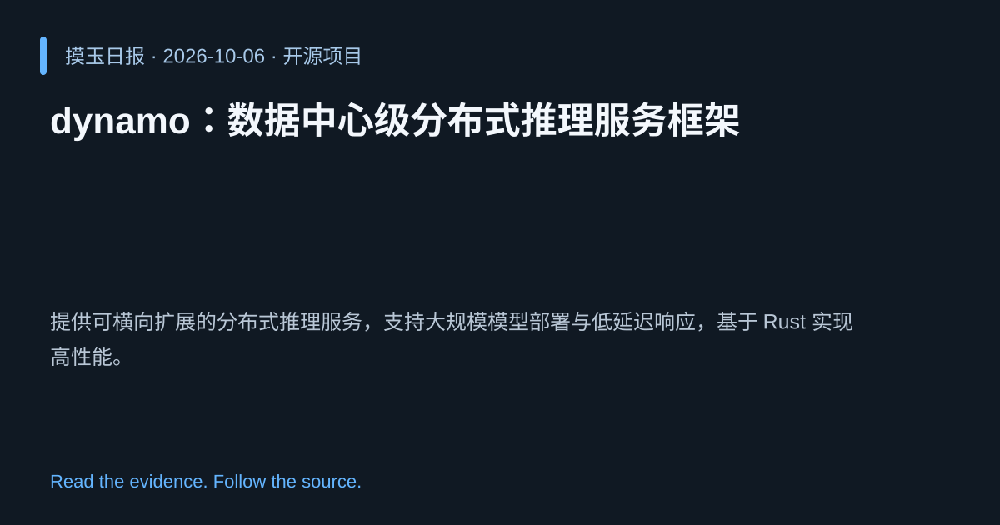

2026-10-06 · Asia/Shanghai · 开源项目 · #11
dynamo：数据中心级分布式推理服务框架
ai-dynamo/dynamo
提供可横向扩展的分布式推理服务，支持大规模模型部署与低延迟响应，基于 Rust 实现高性能。
为什么值得关注
满足企业级大模型推理的高并发与高可用需求，降低部署复杂度并提升吞吐。
- Rust 编写，保证安全与高性能。
- 支持多机分布式推理，适配数据中心规模。
- 提供统一 API，便于集成各种模型后端。

热度 24.5 / 100；排名与评分保留该期记录。